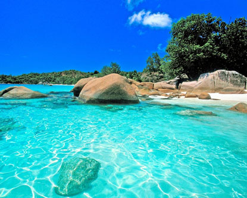

Anzelanzio
Ubicada en Praslin (Seychelles), esta playa es un destino exclusivo de muy pocas aerolineas, todas son Europeas.
Praslin es la segunda isla en tamaño de las 115 que tiene Seychelles en el océano Índico, al noreste de Madagascar. Destino súper exclusivo, llegan a las islas Seychelles varias aerolíneas como Air France, British Airways, Emirates y Air Europa, con tarifas que parten de los 9 millones de pesos. Para tomar como referencia, si la compañía elegida fuera Air France y el vuelo contara con una sola escala, luego del vuelo hasta París el viaje demanda otras 10 horas hasta Seychelles.

Aguas cristalinas.
Entorno selvatico.
Entorno selvático.
En la punta de una isla.
Playas como piscinas.
| País | Seychelles |
|---|---|
| Continente | Africa |
| Población País | 100.000 habitantes |
| Costo | Aproximadamente 9 millones por persona |
| Detalles | Se encuentra rodeada por rocas de granito y a diferencia de otras playas del país no cuenta con arrecife de coral |
-
Peter,Bélgica
Fueron unas vacaciones fantasticas, 100% recomendado para todos aquellos entusiastas del turismo. -

María,España
Recomendadisimoo!!! fui con mis dos hijos josé y josefa, las playas son tranquilas y no debo preocuparme por que se los lleve una ola, es un poco costoso para una familia pero valió la pena. -

Bean,Inglaterra
Difiero de los dos comentarios anteriores, la verdad todo es muy caro, no hay olas fuertes, no tengo hijos y me gusta las playas un poco más movidas.